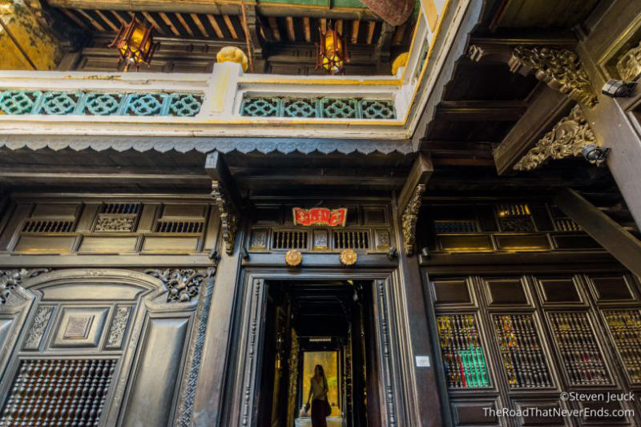
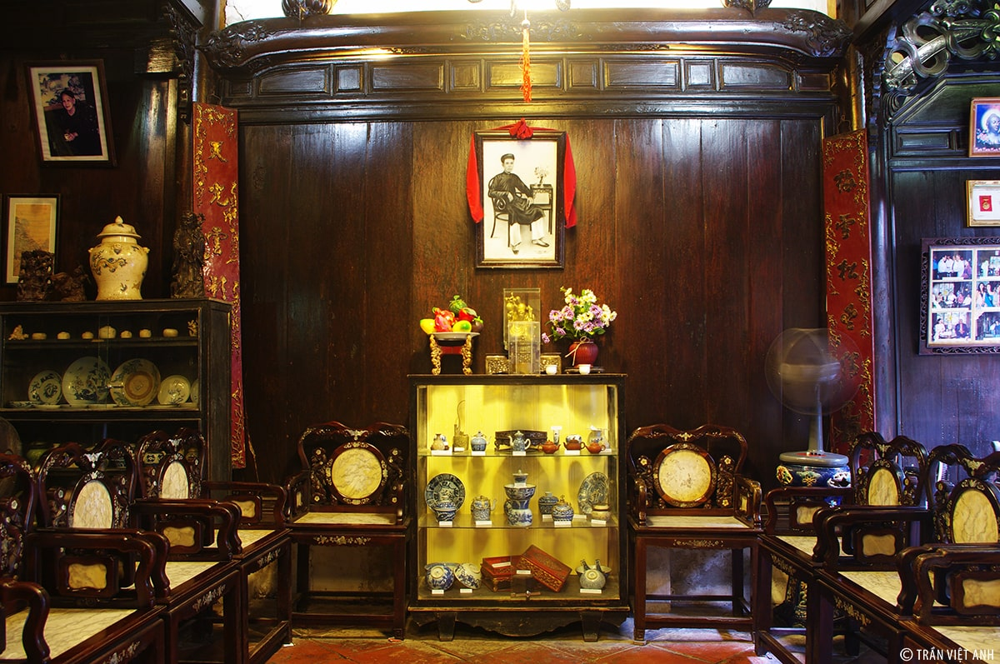
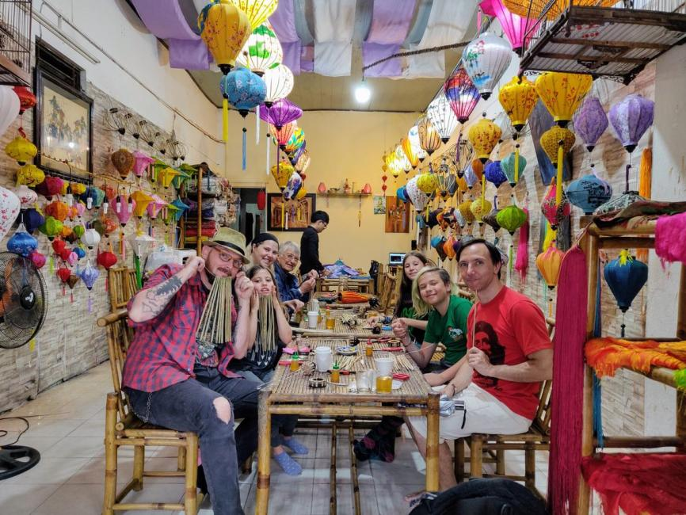
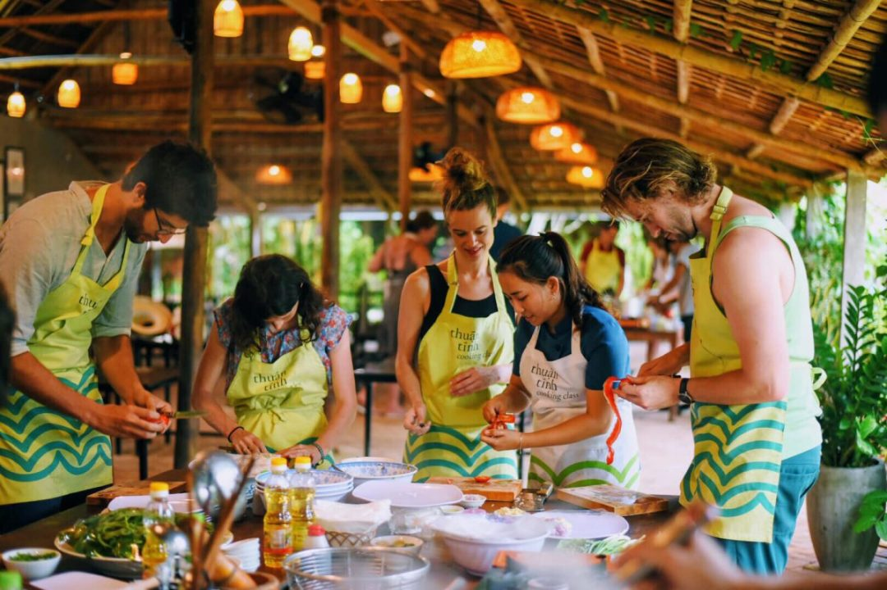

Các Hoạt Động Vui Chơi Nổi Bật Hội An
Hội An - Nhà Cổ Tấn Ký
- Tham quan kiến trúc cổ: Khám phá kiến trúc độc đáo với sự kết hợp giữa các nền văn hóa Việt, Hoa, Nhật.

- Khám phá hiện vật cổ: Tìm hiểu các đồ vật cổ trong ngôi nhà, từ đồ gỗ đến sứ, tranh vẽ.

- Lớp học thủ công: Tham gia làm lồng đèn hoặc các sản phẩm thủ công truyền thống.

- Lớp học nấu ăn: Học cách chế biến món ăn đặc sản như cao lầu, bánh bao, bánh vạc.

- Chụp ảnh: Lưu lại những khoảnh khắc đẹp với không gian cổ kính.
- Tìm hiểu lịch sử gia đình Tấn Ký: Khám phá câu chuyện của gia đình Tấn Ký qua các hiện vật và triển lãm.
Chùa Cầu
- Tham quan kiến trúc Chùa Cầu: Chiêm ngưỡng công trình kiến trúc độc đáo với cầu gỗ nối liền giữa hai bờ sông, mang ảnh hưởng văn hóa Nhật Bản và Trung Hoa.
- Tham gia lễ cúng: Du khách có thể tham gia lễ cúng tại chùa, cầu bình an, may mắn và sức khỏe cho gia đình và bản thân.
- Thưởng thức không gian yên bình: Chùa Cầu là nơi thanh tịnh, lý tưởng để thư giãn, tận hưởng không khí yên bình của Hội An.
- Lễ hội đèn lồng: Vào các dịp lễ hội, đặc biệt là vào rằm, Chùa Cầu trở nên lung linh với hàng nghìn chiếc đèn lồng, tạo không gian huyền bí, đẹp mắt.
- Chụp ảnh: Chùa Cầu là nơi lý tưởng để chụp ảnh, đặc biệt là vào buổi tối khi ánh đèn lồng chiếu sáng cầu.
- Tìm hiểu về lịch sử và truyền thuyết: Khám phá những câu chuyện về sự hình thành và các truyền thuyết xung quanh Chùa Cầu qua các buổi thuyết minh.
Phố cổ Hội An
- Thưởng thức ẩm thực: Nếm thử các món đặc sản như Cao Lầu, Bánh Bao Bánh Vạc, và Bánh Mì Phượng.
- Dạo bước qua phố cổ: Thăm những ngôi nhà cổ, Chùa Cầu, và các hội quán lịch sử.
- Tắm biển Cửa Đại: Thư giãn dưới ánh nắng, tham gia các trò chơi thể thao biển.
- Lễ hội đèn lồng: Thả đèn hoa đăng lên sông Hoài vào các đêm rằm, tạo nên khung cảnh huyền bí.
- Khám phá văn hóa: Xem các màn biểu diễn nghệ thuật dân gian và tham gia lớp học thêu.
Quay lại trang chủ